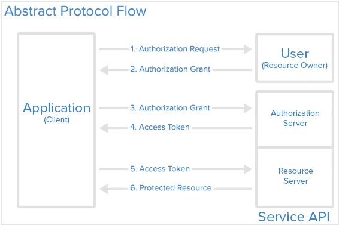
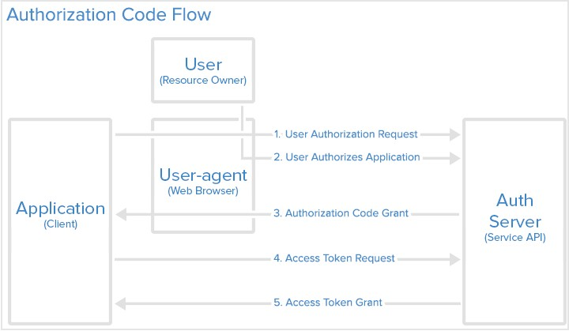
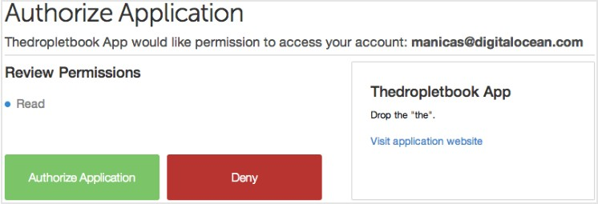
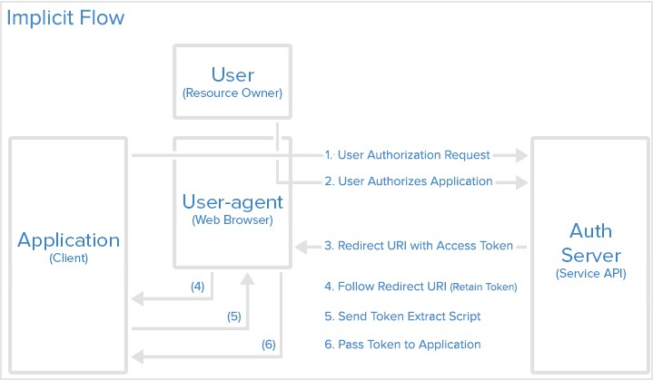
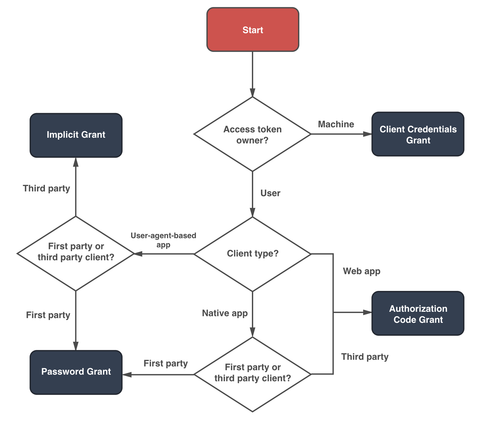

OAuth 2.0 - 기본개념 및 Authorization Grant
최근 OAuth 2.0에 대해 공부하면서 다양한 Grant 종류가 존재함을 알게 되었습니다.
기본 개념과 Grant 종류에 대해 잘 정리되어 OAuth 2.0 이해에 도움됬던 사이트들의 내용을 정리합니다.
Table of Contents
- 소개
- OAuth 역할
- 추상적인 Protocol Flow
- Application 등록
- Authorization Grant Type
- Access Token 사용법
- 그러면 나는 어떤 Grant 타입을 선택해야 할까?
소개
OAuth2는 사용자가 HTTP 서비스 상에서 어플리케이션의 제한된 접근을 허용하기 위한 인가(Authorization) 프레임워크 입니다.
인증은 사용자 계정을 소유한 서비스로 위임하고, 사용자 계정에게 Third-Party 어플리케이션 접근 권한을 부여합니다.
OAuth2는 웹, 데스크톱 어플리케이션, 모바일 디바이스 등을 위한 인가 플로우(Flow)를 제공합니다.
OAuth 2.0 Specification 은 Access Token을 발급 받으려는 클라이언트에게 다양한 Grant(“Method”)를 제공하는 유연한 인가 프레임워크 입니다.
Access Token은 API Endpoint로의 요청을 인증하는데 사용되며, 클라이언트의 데이터에 접근하기 위한 권한을 표현합니다.
명세서에서는 Access Token을 발급하기 위한 5가지 Grant 타입을 정의합니다. :
- Authorization Code Grant
- 서버-사이드 어플리케이션에서 사용
- Implicit Grant
- 모바일 앱 또는 웹 어플리케이션 (사용자의 장비에서 동작하는 어플리케이션)에서 사용
- Resource Owner Credentials Grant
- 클라이언트와 OAuth2 프로바이더와 동일한 도메인, 같은 서비스와 같이 서로 신뢰할 수 있는 어플리케이션일 때 사용
- Client Credentials Grant
- Application API 접근시 사용 (예를 들어 Microservice Architecture에서 각 API 서비스간의 인가)
- Refresh Token Grant
- Access Token 사용기간 만료시 Resource Owner가 매번 다시 인증, 인가 절차를 수행하지 않고 갱신함으로써 더 나은 사용자 경험을 제공하기 위해 사용
OAuth 역할
- Resource Owner : User
- Resource Owner는 어플리케이션이 사용자 계정(보호된 자원)에 접근하도록 인가를 부여/승인하는 사용자 입니다.
- 사용자 계정으로의 어플리케이션의 접근 권한은 “Scope”라는 것으로 제한됩니다.
- Resource / Authorization Server : API Server
- Resource Server는 보호된 사용자 계정을 호스팅하고, Access Token을 기반으로 보호된 자원으로의 요청을 승인, 응답합니다.
- Authorization Server는 사용자의 ID를 확인한 다음 어플리케이션에게 Access Token을 발급합니다.
- 보통 Resource Server와 Authorization Server의 조합을 OAuth 2.0 Provider라고 합니다.
Resource Server는 Authorization Server와 하나의 서비스로 구현되기도 합니다.
- Client : Application
- 사용자의 계정에 접근을 하려는 어플리케이션
- 클라이언트는 먼저 사용자에게 인가받아야 하며, 이때 API 서버에 의해 승인받아야 합니다.
추상적인 Protocol Flow

각 OAuth 역할들이 일반적으로 어떻게 서로 상호작용하는지 추상적으로 설명합니다. :
- Application(Client)는 보호된 자원으로 접근을 위해 사용자(Resource Owner)에게 인가 승인을 요청합니다.
- 사용자(Resource Owner)가 인가 요청을 승인하면 Application(Client)는 승인 허가를 받습니다.
- Application(Client)는 Authorization Server(API)로 Access Token 발급을 요청합니다.
이때 인증을 위한 ID와 제공받을 권한을 함께 전달합니다. - 인증 정보와 제공할 권한 정보가 유효하면 Authorization Server(API)는 Application(Client)에게 Access Token을 발급합니다.
이로써 인가(Authorization) 프로세스가 완료됩니다. - Application(Client)는 Resource Server(API)에게 인증을 위한 Access Token을 전달하면서 필요한 자원으로의 접근을 요청합니다.
- Resource Server(API)는 Access Token 정보가 유효하면 해당 자원으로의 접근을 허용, 제공 합니다.
Application 등록
어플리케이션이 OAuth를 사용하기 전에 서비스 등록을 해야 합니다.
보통 Developer / API 웹 사이트에서 등록할 수 있습니다. 이때 다음 정보를 제공해야 합니다.
- Application Name
- Application Website
- Redirect URL 또는 Callback URL
- 사용자가 어플리케이션을 승인 또는 거절한 후 사용자를 리다이렉트 할 URL
- Authorization Code 또는 Access Token을 다루는 어플리케이션의 일부
Authorization Grant Type
Authorization Code Grant
Authorization Code Grant 는 소스 코드가 공개적으로 노출되지 않고, 클라이언트 Secret 값을 안전하게 유지할 수 있는 서버-사이드 어플리케이션에 최적화되어 있기 때문에 가장 일반적으로 사용되는 방식입니다.
이 방식은 “Redirection-based Flow” 입니다.
즉, 어플리케이션은 User-Agent (i.e. 사용자의 웹 브라우저)와 상호작용 할 수 있어야 하고, User-Agent를 통해 라우팅되는 API Authorization Code를 받을 수 있어야 합니다.

Step 1. Authorization Code Link
먼저 Application(Client)는 OAuth 2.0 프로바이더에게 다음과 같이 Authorization Code Link를 제공합니다.
1 | https://provider.oauth2.com/oauth/authorize?response_type=code&client_id=${CLIENT_ID}&redirect_uri=${CALLBACK_URL}&scope=read |
- https://oauth2-provider.coml/oauth/authorize : API Authorization Endpoint
- client_id : Application의 Client ID. 보통 Facebook, Google과 같은 API 서비스 제공자가 등록된 어플리케이션을 구분하기 위해 제공하는 ID 값을 의미합니다.
- redirect_uri : Authorization Code를 승인 받은 후 User-Agent가 리다이렉트 될 URI
- response_type : Application(Client)가 사용을 원하는 Grant 타입을 지정하여 전달합니다. Authorization Code Grant와 Implicit Grant 방식에서만 사용됩니다.
- code : Authorization Code
- token : Implicit Grant
- scope : Application(Client)이 요청하는 액세스 수준을 지정합니다.
Step 2. User Authorizes Application
만약 사용자가 접근 / 사용하려는 서비스에 로그인 되어 있지 않다면 우선 로그인 페이지로 이동합니다.
로그인 후에 “해당 서비스의 특정 기능을 어떤 권한을 갖고 사용할지 허용 또는 거부하는 페이지(Authorization Page)”로 이동합니다.
아래의 스크린샷은 DigitalOcean의 Authorization Page인데, “Thedropletbook App”이 “manicas@digitalocean.com“ 사용자에게 “Read” 권한 허용을 요청하는 것을 볼 수 있습니다.

Step 3. Application Receives Authorization Code
사용자가 권한 사용을 허가(승인 버튼 클릭)하면 Authorization Server는 Redirect URL (Callback URL)로 Authorization Code 또는 Access Token을 포함하여 리다이렉트 합니다.
Redirect URL은 각 Developer / API 사이트에서 어플리케이션 등록 중 지정한 값 입니다.
어플리케이션이 “dropletbook.com”이라고 가정할 때, 리다이렉트는 다음과 같이 보일 것 입니다. :
1 | https://dropletbook.com/callback?code=AUTHORIZATION_CODE |
Redirect URL에는 민감한 정보가 포함되어 있으므로, 서비스가 사용자를 임의의 위치로 리다이렉트 하지 않는 것이 중요합니다.
따라서 사용자가 올바른 위치로 리다이렉트 되는 것을 보장하기 위해 각 Developer / API 사이트에서 어플리케이션 등록시 한개 이상의 Redirect URL을 등록하도록 유도합니다.
Step 4. Application Requests Access Token
Application(Client)는 Access Token을 발급받기 위해 Authorization Server로 부터 받은 Authorization Code 값, Client Secret 값이 포함된 상세한 인증 정보를 Authorization Server로 전달합니다.
1 | https://provider.oauth2.com/oauth/token?client_id=${CLIENT_ID}&client_secret=${CLIENT_SECRET}&grant_type=authorization_code&code=${AUTHORIZATION_CODE}&redirect_uri=${CALLBACK_URL} |
- client_id
- client_secret
- grant_type
- code
- redirect_uri
Step 5. Application Receives Access Token
만약 인가 정보가 올바르다면 Authorization Server는 Application(Client)에게 Access Token (경우에 따라 Refresh Token이 될 수 있다)을 포함한 응답을 보냅니다.
1 | { |
이제 Application(Client)는 보호된 리소스 사용을 허가받았습니다!
Access Token이 만료되거나 폐지될 때까지 Access Token을 사용하여 서비스 API의 보호된 리소스를 제한된 권한 내에서 사용할 수 있습니다.
Implicit Grant
Implicit Grant 타입은 Client Secret 값의 기밀성을 보자하지 못하는 Mobile App.과 Web App.에서 사용됩니다.
Authorization Code Grant 타입과 마찬가지로 이 방식 역시 “Redirection-Based Flow” 입니다. 그러나 Application(Client)에게 Access Token을 전달하기 위해 먼저 Access Token을 User-Agent에게 발급합니다. 따라서 Access Token이 사용자 및 사용자 장비의 다른 어플리케이션에 노출될 수 있습니다.
또한 Implicit Grant 타입은 Application(Client)의 ID를 인증하지 않으며, 이를 위해 (Application 등록 시 설정한) Redirect URL에 의존하게 됩니다.
이 Grant 타입은 Refresh Token을 지원하지 않습니다.
Implicit Grant 타입의 프로세스를 간략히 설명하면 다음과 같습니다. :
- 사용자(Resource Owner)는 Application(Client)을 승인하도록 요청받습니다.
- Authorization Server는 User-Agent에게 Access Token을 전달합니다.
- User-Agent는 Application(Client)에게 Access Token을 전달합니다.

Step 1. Implicit Authorization Link
Implicit Grant 타입에서 사용자(Resource Owner)는 Authorization Server로부터 Access Token을 요청할 Autorization Link를 제공 받습니다. 이 링크는 response_type 값으로 Code 대신 Token을 요청하는 점을 제외하곤 Authorization Code Grant의 링크와 같습니다.
1 | https://provider.oauth2.com/oauth/authorize?response_type=token&client_id=${CLIENT_ID}&redirect_uri=${CALLBACK_URL}&scope=${SCOPE} |
Step 2. User Authorizes Application
사용자가 위 링크를 클릭하면 먼저 해당 서비스로 로그인을 하고, “해당 서비스의 특정 기능을 어떤 권한을 갖고 사용할지 허용 또는 거부하는 페이지(Authorization Page)”로 이동합니다.
아래 스크린샷에서 “Thedropleetbook App”은 “manicas@digitalocean.com“ 사용자에게 READ 권한 허용을 요청하는 것을 볼 수 있습니다.
Step 3. User-Agent Receives Access Token with Redirect URI
사용자가 권한 사용을 허가(승인 버튼 클릭)하면 Authorization Server는 앞서 제공된 Redirection URI를 사용하여 User-Agent를 다시 Application(Client)로 리다이렉트 합니다.
이때 Redirection URI에는 URI Fragment로 Access Token이 포함됩니다. 또한 state, token_type, expires_in 파라미터도 함께 전달됩니다.
1 | https://dropletbook.com/callback#access_token=${ACCESS_TOKEN}&token_type=bearer&state=xyz&expires_in=119 |
Step 4. User-Agent Follows the Redirect URI
User-Agent는 Access Token을 가진채로 리다이렉트 지시를 따라갑니다.
Step 5. Application Sends Access Token Extraction Script
Application(Client)는 User-Agent가 유지한 전체 Redirect URI에서 Access Token을 추출할 수 있는 스크립트가 포함된 웹 페이지(보통 Javascript와 같은 Embedded Script가 포함된 HTML 페이지입니다.)를 응답합니다.
Redirect URI로 부터 Access Token을 추출하는 Javascript 소스코드 예제 :
1 | /* Facebook에서 사용자의 친구 정보를 가져오는 스크립트 */ |
Step 6. Access Token Passed to Application
User-Agent는 Application(Client) 제공된 스크립트를 실행하고, 추출된 Access Token을 Application(Client)에게 전달합니다.
이제 Application(Client)는 보호된 리소스 사용을 허가받았습니다!
Access Token이 만료되거나 폐지될 때까지 Access Token을 사용하여 서비스 API의 보호된 리소스를 제한된 권한 내에서 사용할 수 있습니다.
Resource Owner Password Credentials Grant
Application(Client)는 Resource Owner의 Password Credential 정보(Username, Password)만을 사용하여 Access Token 발급을 요청합니다.
Resource Owner Password Credentials의 동작 방식은 다음과 같습니다. :
- 사용자(Resource Owner)는 인증 정보(Username, Password)를 Application(Client)에게 직접 전달합니다.
- Application(Client)는 앞서 받은 인증 정보를 Authorization Server로 전송하여 Access Token 발급을 요청합니다.
- Authorization Server는 클라이언트를 인증하고, Resource Owner Credentials을 검증한 후에 Access Token을 발급합니다.
Application(Client)과 OAuth 2.0 프로바이더가 같은 도메인/솔루션 내에 존재(First-Party)하여 서로 신뢰할 수 있는 경우 이 Grant 타입을 사용합니다.
단, Application(Client)는 사용자의 인증정보(Username, Password)를 별도로 보관하지 않아야 합니다.
Access Token 발급 요청 URL 예시 :
1 | curl -X POST "https://provider.oauth2.com/oauth/token" --user ${CLIENT_ID}:${CLIENT_SECRET} -H "accept: application/json" -H "content-type: application/x-www-formurlencoded" -d "grant_type=password&username=${USERNAME}&password=${PASSWORD}&scope=${SCOPE}" |
Access Token 발급 요청 예시 :
1 | POST /token HTTP/1.1 |
Access Token 발급 응답 예시 :
1 | HTTP/1.1 200 OK |
Client Credentials Grant
Application(Client)는 오직 Client Credential 정보(Client ID, Client Secret)만을 사용하여 Access Token 발급을 요청합니다.
이 Grant 타입은 Resource Owner에게서 권한을 위임 받아 제한된 리소스에 접근하는 것이 아니라 자신의 목적을 위해 어플리케이션을 사용하는 것 입니다.
Refresh Token을 사용하면 쉽게 Access Token을 갱신하여 사용할 수 있고, 동적으로 등록하는 과정이 쉬우며, 서비스 통합 시 모든 과정을 자동화 할 수 있기 때문에 마이크로서비스 아키텍처에서 채택되고 있습니다.
Access Token 발급 요청 URL 예시 :
1 | curl -X POST "https://provider.oauth2.com/oauth/token" --user ${CLIENT_ID}:${CLIERNT_SECRET} -d "grant_type=client_credentials&scope=${SCOPE}" |
Access Token 발급 요청 예시 :
1 | POST /token HTTP/1.1 |
Access Token 발급 응답 예시 :
1 | HTTP/1.1 200 OK |
Refresh Token Grant
만약 사용기간이 만료된 Access Token을 사용해 제한된 리소스 접근을 시도하면 “Invalid Token Error” 에러 메세지를 보게 됩니다.
Access Token 발급시 Refresh Token 값을 함께 받았다면 이를 사용해 새로운 Access Token 발급 요청을 할 수 있습니다.
따라서 Third-Party 어플리케이션은 사용자(Resource Owner)가 로그인 상태가 아니더라도 Refresh Token을 통해 새로운 Access Token을 발급받아 필요한 리소스에 접근할 수 있게 됩니다.
단, Refresh Token은 Authorization Code Grant 타입과 Resource Owner Password Credentials Grant 타입에서만 사용할 수 있습니다.
Access Token 사용법
일단 Application(Client)가 Access Token을 발급받고 나면 사용기간이 만료되거나 폐기되기 전까지 API를 통해 제한된 권한 내에서 보호된 리소스로 접근할 수 있습니다.
다음은 발급받은 Access Token을 사용하여 API 서버로 접근하는 예시입니다. :
1 | curl -X POST "https://example.server.com/api/${OBJECT}" -H "Authorization: Bearer ${ACCESS_TOKEN}" |
그러면 나는 어떤 Grant 타입을 선택해야 할까?
연동하려는 서비스가 First-Party 또는 Third-Party 인지, Web App. 또는 Native App. 또는 User-Agent 기반 App. 인지에 따라 OAuth 2.0 Authorization Grant 타입을 결정할 수 있습니다.

- Web Application
- A web application is a confidential client running on a web server. Resource owners access the client via an HTML user interface rendered in a user-agent on the device used by the resource owner. The client credentials as well as any access token issued to the client are stored on the web server and are not exposed to or accessible by the resource owner.
- User-Agent 기반 Application
- A user-agent-based application is a public client in which the client code is downloaded from a web server and executes within a user-agent (e.g., web browser) on the device used by the resource owner. Protocol data and credentials are easily accessible (and often visible) to the resource owner. Since such applications reside within the user-agent, they can make seamless use of the user-agent capabilities when requesting authorization.
- Native Application
- A native application is a public client installed and executed on the device used by the resource owner. Protocol data and credentials are accessible to the resource owner. It is assumed that any client authentication credentials included in the application can be extracted. On the other hand, dynamically issued credentials such as access tokens or refresh tokens can receive an acceptable level of protection. At a minimum, these credentials are protected from hostile servers with which the application may interact. On some platforms, these credentials might be protected from other applications residing on the same device.
Reference